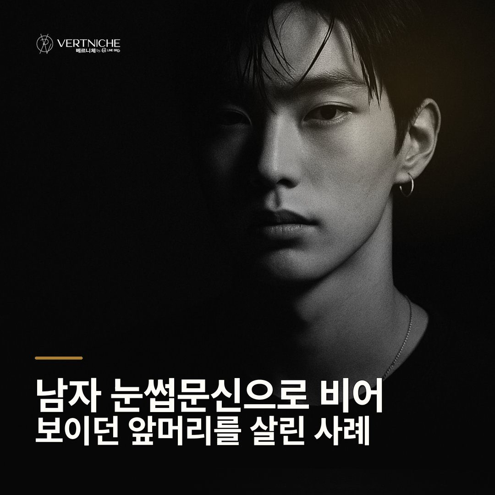
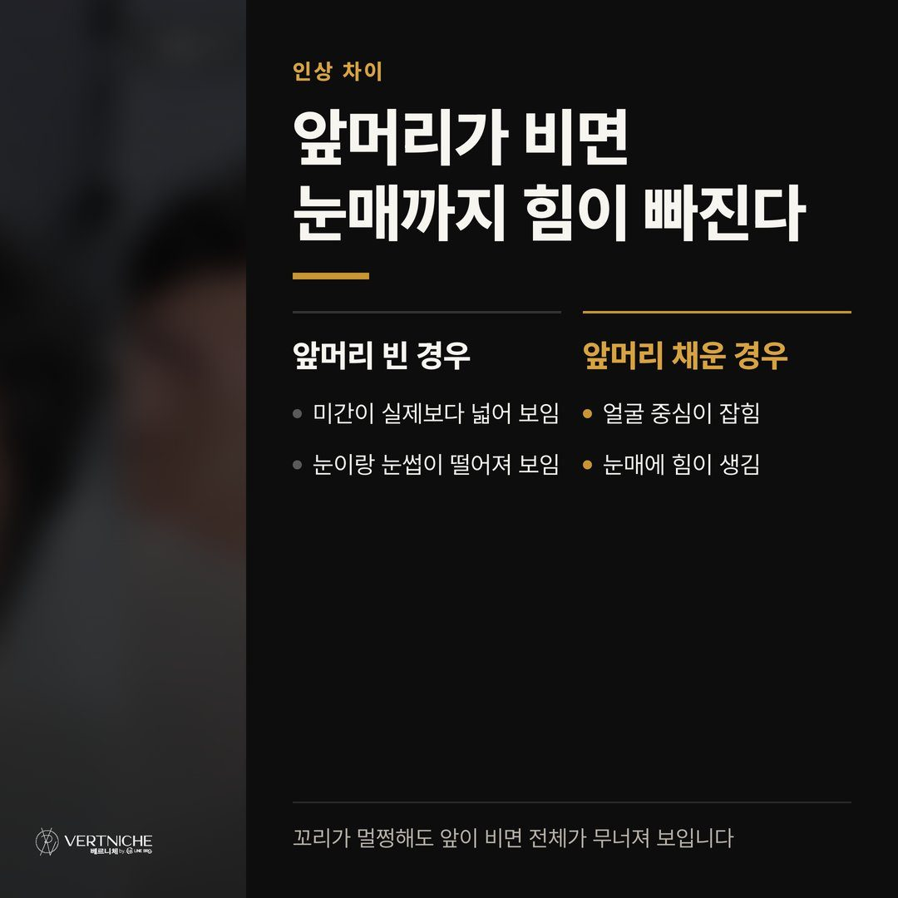
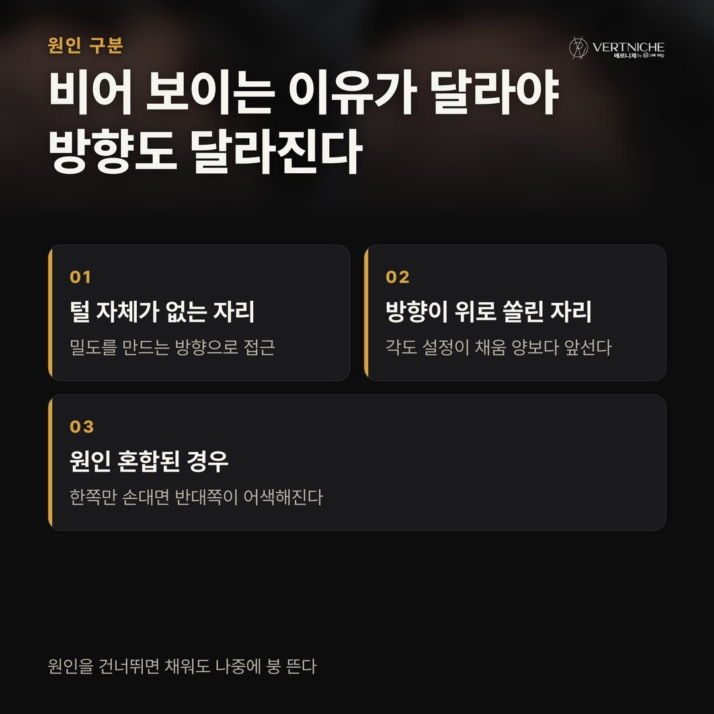
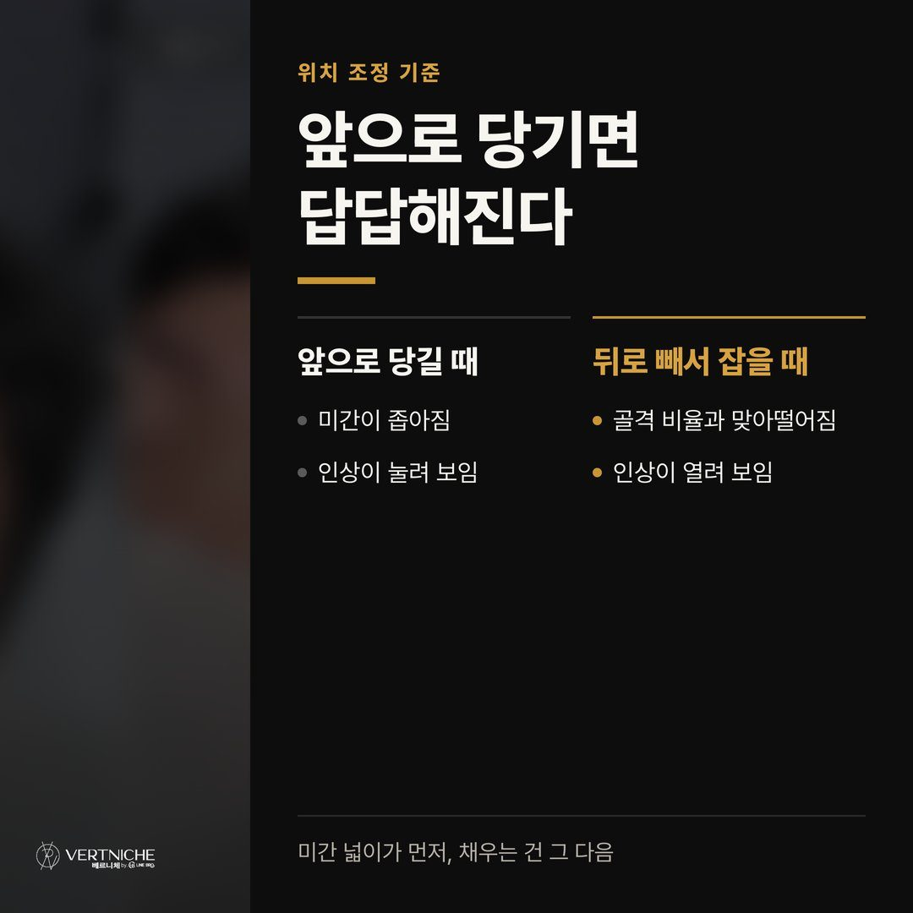
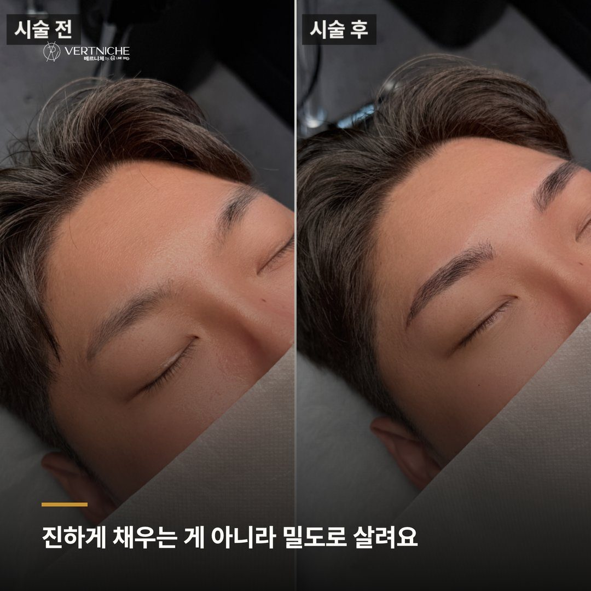
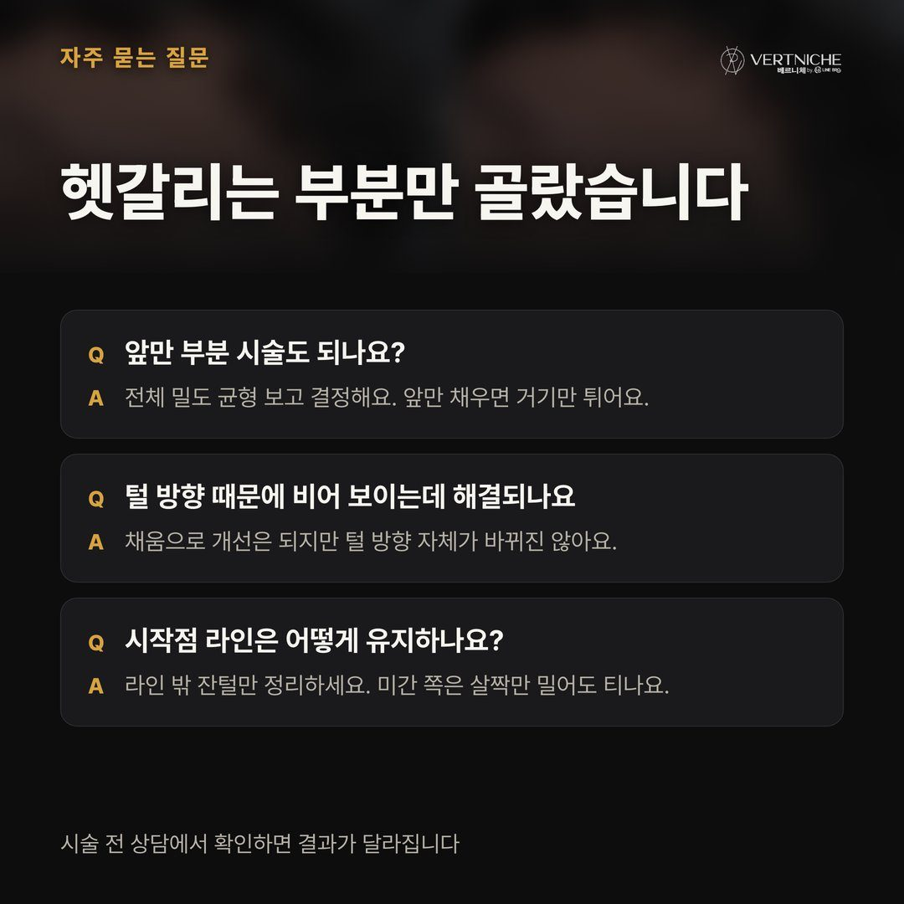
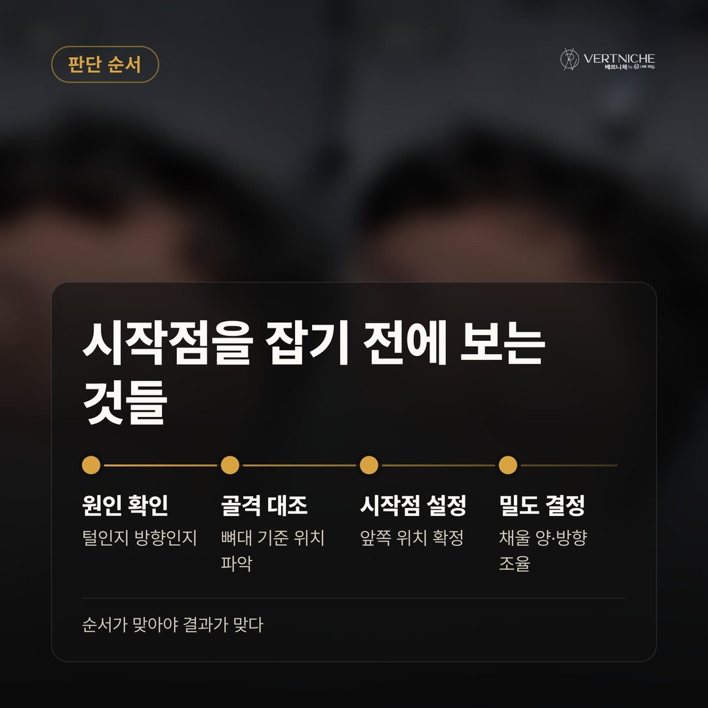
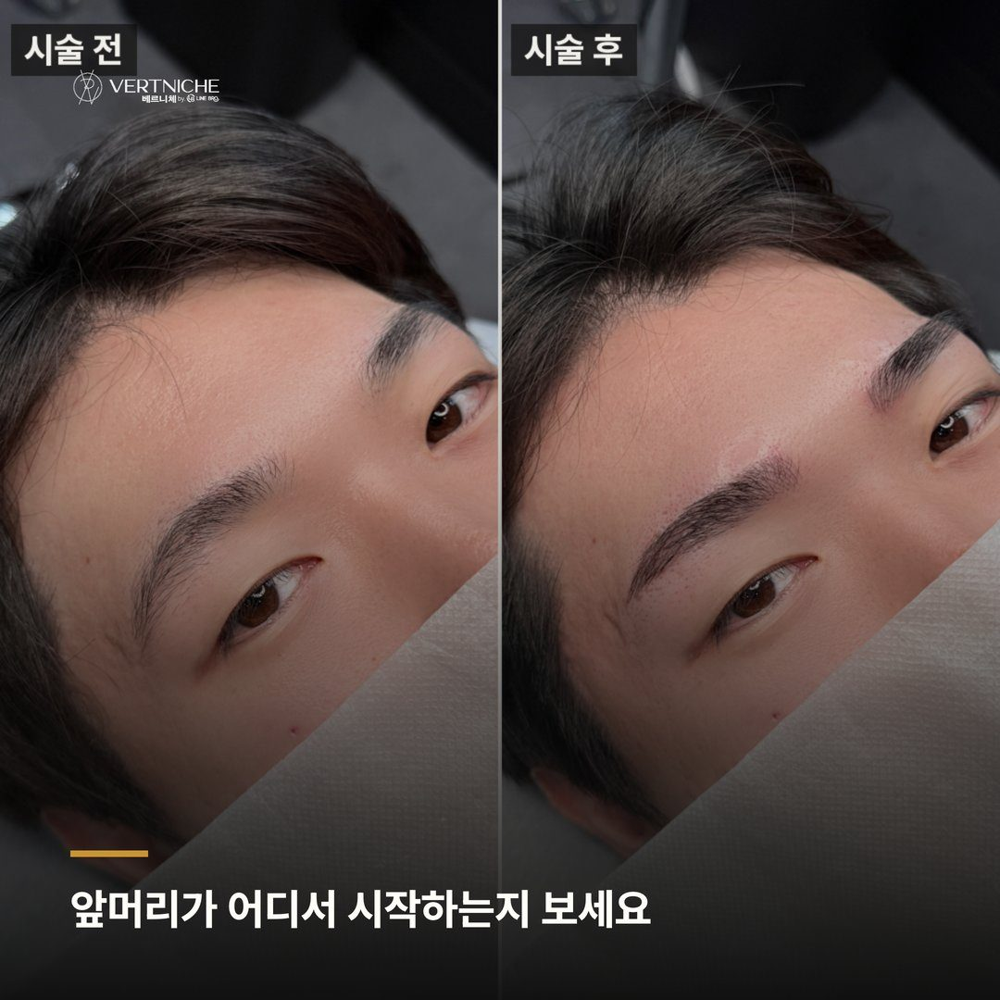
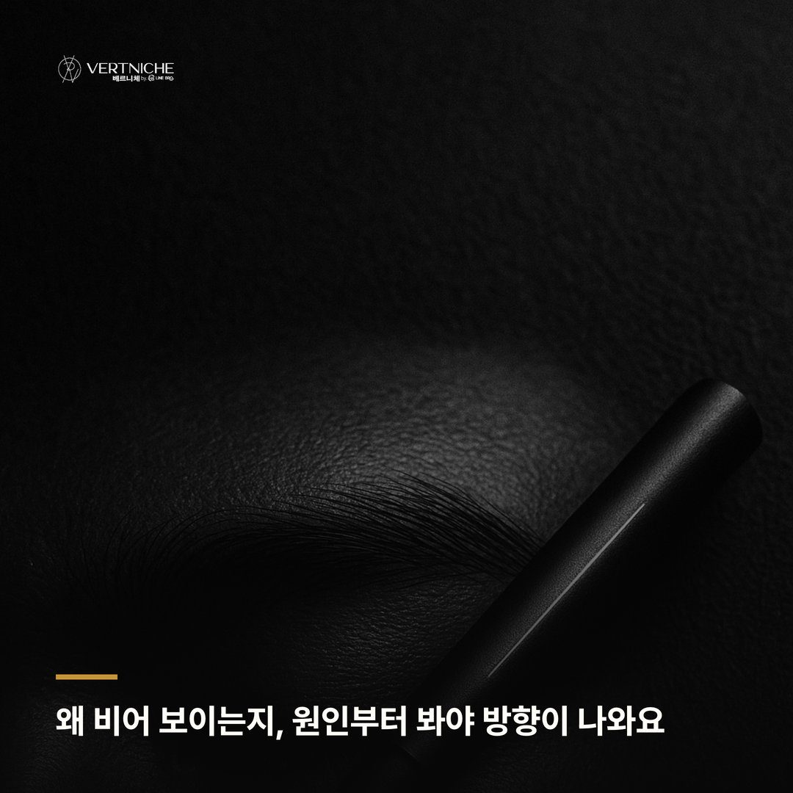
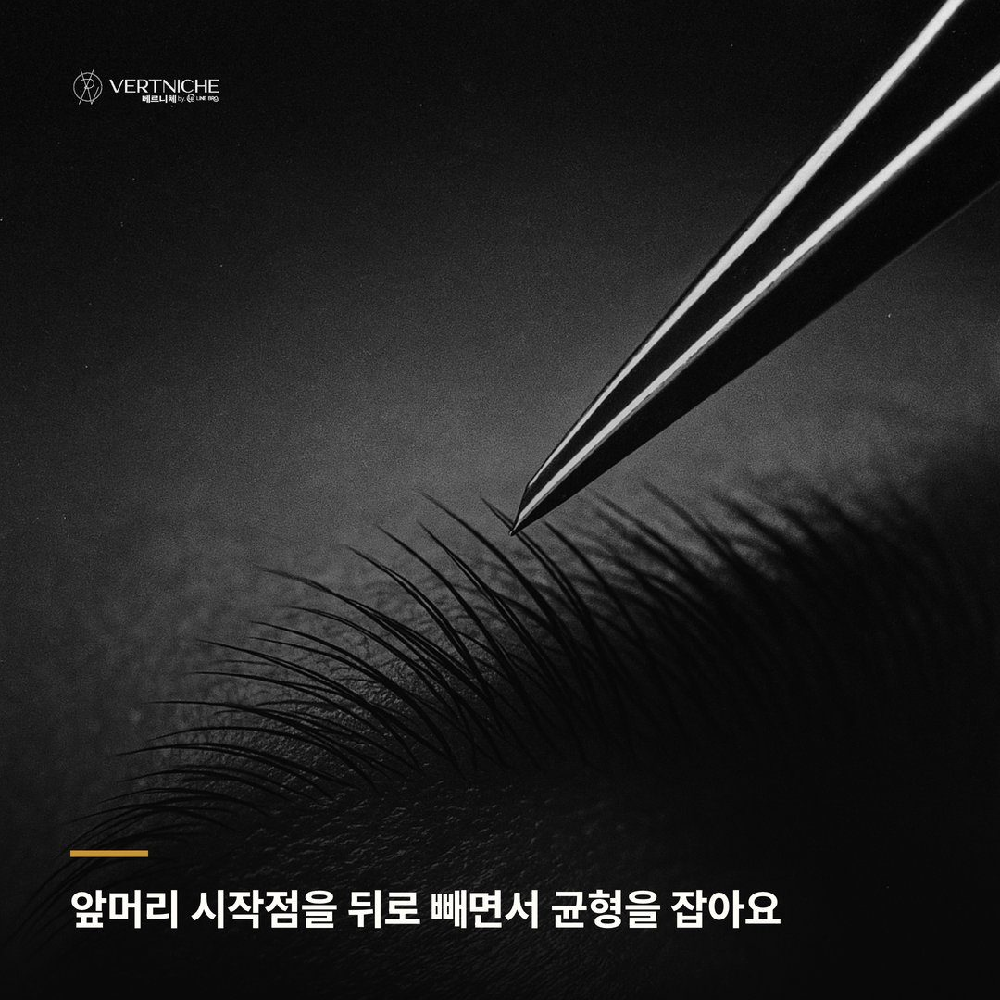

남자 눈썹문신, 비어 보이는 앞머리부터 봐야 하는 이유

눈썹 숱이 적다고 하시는 분들, 실제로 보면 전체가 얇은 게 아니라 앞쪽 시작점만 비어 있는 경우가 훨씬 많아요. 꼬리 쪽은 결이 살아 있고 중간도 그런대로 있는데, 앞머리만 뚫려 있으니 정면에서 봤을 때 눈썹이 중간부터 시작되는 느낌이 되는 거죠. 그러면 얼굴 가운데가 휑해 보이고, 인상이 흐릿하게 읽혀요.이 글에서는 그런 케이스에서 제가 상담을 어떤 순서로 진행하는지 정리해봤어요. 남자 눈썹문신이 처음이거나, 눈썹이 없는 건 아닌데 인상이 약하다고 느끼는 분들한테 도움이 됐으면 좋겠어요.
인상을 가르는 건 앞머리 밀도예요
눈썹이 흐릿하면 전체를 진하게 채워야 한다고 생각하기 쉬운데, 상담하다 보면 앞쪽 시작점 하나가 인상을 통째로 바꾸는 경우가 꽤 많아요.
앞머리가 비면 두 가지가 생겨요. 두 눈썹 사이가 실제보다 넓어 보여서 얼굴이 멍해 보이는 것, 그리고 눈썹이 눈이랑 멀리 떨어진 것처럼 읽혀서 눈매까지 힘이 빠지는 것. 꼬리 쪽은 결이 살아 있는데 앞이 비어 있으면, 전체적으로 "관리 안 한 느낌"보다는 "인상이 약한 느낌"으로 읽히거든요.
그래서 저는 상담에서 눈썹을 통째로 보지 않고 앞머리·중간·꼬리를 나눠서 어디가 비었는지부터 확인해요. 앞이 문제면, 뒤를 아무리 손봐도 인상은 안 살아나니까요.
원인 먼저, 방향은 그다음이에요
앞머리가 비어 보인다고 해서 다 같은 이유는 아니에요. 애초에 털이 안 나는 자리라 비어 있는 경우가 있고, 털은 있는데 자라는 방향이 위로 쏠려서 시작점이 뚫려 보이는 경우도 있거든요.
이 두 개는 접근이 달라요. 털이 없는 자리는 채워서 밀도를 만드는 게 맞는데, 방향 때문에 비어 보이는 자리는 무작정 진하게 채우면 나중에 어색해질 수 있어요. 모 방향이 위로 쏠려서 앞머리가 비어 보이는 경우엔, 채움만으로는 개선에 한계가 있다고 솔직하게 말씀드려요.
그래서 시술 전에 눈썹을 위아래로 훑으면서 결의 방향부터 확인해요. 방향이 원인이라면 채우는 양보다 어느 각도로 결을 얹느냐가 더 중요해지거든요. 원인을 건너뛰고 밀도만 올리면, 당장은 채워져 보여도 시간이 지나면서 붕 뜨는 느낌이 남더라고요.
앞으로 당기는 게 아니라, 시작점 위치를 다시 잡아요
앞이 비어 보인다고 시작점을 안쪽으로 밀어서 채우면 오히려 역효과예요. 두 눈썹 사이가 좁아지면서 인상이 답답해지거든요.
비어 보인다고 앞으로 당겨 채우는 게 아니라, 밀도를 만들면서 시작점 위치 자체를 얼굴 골격에 맞게 다시 잡는 거예요. 미간 넓이가 시작점을 결정하는 기준이라, 여기를 잘못 건드리면 인상이 통째로 달라져요. 실제로 시작점이 너무 안쪽으로 잡혀 있던 경우엔, 라인을 채우면서 위치를 살짝 뒤로 빼는 방향으로 조정한 적도 있어요.
저는 이 단계에서 펜으로 시작점을 먼저 표시하고, 거울로 같이 보면서 "여기서 시작하면 어떠세요" 하고 몇 번씩 다시 잡아요. 앞머리는 1~2mm만 움직여도 정면 인상이 달라지는 자리라, 여기서 시간을 제일 많이 씁니다. 채우는 건 그다음이에요.
진하게 채우는 게 아니라 밀도로 살려요
앞머리가 비어 있으면 확 진하게 채우고 싶은 마음이 드는 건 자연스러운 반응인데, 저는 앞은 특히 진하게 안 넣는 편이에요.
앞머리는 얼굴 정중앙에 있어서, 진하면 진할수록 티가 나요. 없는 곳에 결을 심듯이 밀도를 만드는 거예요. 한 번에 꽉 채우는 게 아니라, 원래 있던 결 방향을 따라가면서 빈 자리만 촘촘하게 메우는 거죠. 그래야 정면에서 봐도 원래 그 자리에 눈썹이 있던 것처럼 자연스러워요.
진한 눈썹이 잘한 게 아니라, 얼굴에 자연스럽게 얹힌 눈썹이 잘한 거라고 봐요. 시술 직후 며칠은 진해 보이지만, 회복되면서 결국 이 밀도 감각이 결과를 갈라요. 비어 보이던 앞이 채워지면 눈매까지 또렷해지는데, 손님들이 "인상이 정리됐다"고 말씀하시는 게 대부분 이 부분 덕이에요.
자주 나오는 질문
앞머리만 부분적으로 시술해도 되나요? 비어 있는 자리가 앞쪽이라도, 전체 균형을 보고 결정해요. 앞만 채웠는데 중간·꼬리랑 밀도 차이가 크면 오히려 앞만 도드라져 보이거든요. 앞을 살리더라도 전체 흐름 안에서 자연스럽게 이어지게 잡는 편이에요.
눈썹 방향이 위로 쏠려서 비어 보이는데, 문신으로 완전히 해결되나요? 상당 부분 개선되지만, 원래 털이 쏠리는 방향까지 바꾸는 건 아니에요. 그래서 상담할 때 어디까지 자연스럽게 정리되는지 솔직하게 말씀드리고 방향을 잡아요.
시술 후 앞머리 관리는 어떻게 하나요? 시작점 라인 밖으로 자라는 잔털만 정리하시면 돼요. 라인 안쪽은 건드리지 마시고, 미간 쪽은 살짝만 밀어도 티가 나니까 조심하셔야 해요.
포스팅 요약
• 인상이 약해 보이는 원인은 전체 밀도가 아니라 앞머리 시작점에 있는 경우가 많아요
• 비어 보이는 이유가 털 부재인지 방향 문제인지에 따라 접근이 달라지고, 시작점 위치는 골격 기준으로 다시 잡아요
• 앞은 진하게 채우는 게 아니라 결 방향에 맞춰 밀도를 만드는 게 자연스러운 결과로 이어져요
궁금하신 게 있으면 편하게 문의 주세요. 지금 상태 보고 방향 말씀드릴게요.
대구 눈썹문신 상담부터 시술까지 어떻게 진행되나
대구 남자눈썹, 눈썹 정리 전에 눈썹칼 쓰는 방법 알아보기
대구눈썹문신 잘하는곳 고르는 기준, 원장이 뭘 보는지가 답이에요
더 보기 / 상담
남자관리 사례랑 눈썹문신 결과는 인스타에 계속 올리고 있어요. 시술 사진이랑 관리 팁은 아래 링크에서 더 보실 수 있습니다.
시술 사진









이 글은 네이버 블로그에도 같은 내용으로 올라가 있습니다.